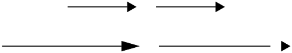

diagrams
Declarative domain-specific language for creating vector graphics
- http://projects.haskell.org/diagrams/
- diagrams-core
- diagrams-lib
- diagrams-svg, diagrams-rasterific, ...
- cabal update && cabal install diagrams

5 Active Developers
67 Contributors
- Chris Chalmers
- Daniel Bergey
- Jeffrey Rosenbluth
- Ryan Yates
- Brent Yorgey
Diagrams 1.3 released
Projections
Diagrams 1.3
Path Intersections

Diagrams 1.3
Grouping for Opacity

Diagrams 1.3
New Backends
- diagrams-pgf
- diagrams-canvas
- diagrams-hmlt5
A Diagram

{-# LANGUAGE NoMonomorphismRestriction #-}
import Diagrams.Prelude
import Diagrams.Backend.SVG.CmdLine
diagram :: Diagram B
diagram = circle 1 # lw ultraThick # lc purple # fc orange
main = mainWith $ frame 0.1 diagram
Composing Diagrams
atop
c1 = circle 0.5 # fc steelblue
c2 = circle 1 # fc orange
diagram :: Diagram B
diagram = c1 `atop` c2
diagram' :: Diagram B
diagram' = c1 <> c2
Composing Diagrams
Side by Side
c1 = circle 0.5 # fc steelblue
c2 = circle 1 # fc orange
diagram :: Diagram B
diagram = c1 ||| c2
diagram' :: Diagram B
diagram' = c1
===
c2
Composing Diagrams
Every diagram has a local origin
Composing Diagrams
Local Origin
c1 = circle 0.5 # fc steelblue
c2 = circle 1 # fc orange
diagram :: Diagram B
diagram = (c1 <> c2) # showOrigin
Side by Side
||| is moveOriginTo + atop
Composing Diagrams
with beside
c1 = circle 0.5 # fc steelblue
c2 = circle 1 # fc orange
diagram :: Diagram B
diagram = beside (1 ^& 1) c1 c2 # showOrigin
Moral
All defined in terms of atop and moveOriginTo
- besde, |||, ===
- cat, hcat, vcat, hsep, vsep
- juxtapose
- position
- appends
How do we know where to place diagrams when composing so that they don't overlap?
Bounding Boxes- Envelopes
Bounding Boxes
beside (1, 1)

Envelopes

Envelopes
beside (1, 1)

Envelopes
beside (1, 1)

Envelopes
beside (1.5, 1)
Envelopes
beside (1.5, 1)

Envelopes
Depend on the local origin
- not always intuitive
- extensional not intensional
- not the same as the convex hull

https://github.com/diagrams/diagrams-doc/blob/master/envelope/envelope.pdf
Align
Moves the local origin to the envelope

h = hexagon 1 # fc lightgreen
sOrigin = showOrigin' (with & oScale .~ 0.04)
diagram :: Diagram B
diagram = h # alignR # sOrigin
<> h # alignBL # sOrigin
<> h # alignTL # sOrigin
Trace

Snug

h = hexagon 1 # fc lightgreen
sOrigin = showOrigin' (with & oScale .~ 0.04)
diagram :: Diagram B
diagram = h # alignR # sOrigin
-- why not snugBL ?
<> h # snugB # snugL # sOrigin
<> h # snugT # snugL # sOrigin
A 2 Mirror Kaleidoscope

Preliminaries
import Control.Monad (replicateM)
import Control.Monad.Random
import Data.Colour.Palette.ColorSet
import Data.List (zipWith, zipWith3)
import Diagrams.Prelude
import Diagrams.Backend.SVG.CmdLine
import System.Random
sizeValue :: (RandomGen g) => Rand g Double
sizeValue = getRandomR (0.05, 0.25)
coordValue :: (RandomGen g) => Rand g Double
coordValue = getRandomR (-0.5, 0.5)
Generating The Confetti
confetti :: Int -> Rand StdGen (Diagram B)
confetti n = do
ss <- replicateM n sizeValue -- radius
cs <- replicateM n getRandom -- color index
as <- replicateM n getRandom -- opacity
xs <- replicateM n coordValue -- x coordinate
ys <- replicateM n coordValue -- y coordinate
let mkCirc :: Double -> Int -> Double -> Diagram B
mkCirc s c a = circle s # fc (webColors c)
# opacity a # lw none
pos = zipWith mkP2 xs ys
conf = zipWith3 mkCirc ss cs as
return $ position (zip pos conf)
Generating The Confetti
seed = 0, pieces = 50

Cut out a Triangle
isoceles :: (TrailLike t, V t ~ V2) => Int -> t
isoceles n = polygon
(def & polyType .~ PolySides [deg1 @@ turn, deg2 @@ turn] [1,1]
& polyOrient .~ OrientH )
where
deg1 = 1/2 - (1 / fromIntegral n)
deg2 = 1/2 - 1/2 * deg1
mkTriangle :: Int -> Diagram B -> Diagram B
mkTriangle n = clipped tri # lw none
where
tri = isoceles n # rotateBy (-1/4 - 1 / (2 * fromIntegral n))
The Triangle
Reflect the Triangle
outlines just for visualization

Keep reflecting
The Kaleidoscope
iterateIdx :: Integral i => (i -> a -> a) -> a -> [a]
iterateIdx f t = go f t 0
where
go f t i = let t' = f i t
in t': go f t' (i + 1)
kaleidoscope :: Diagram B -> Int -> Diagram B
kaleidoscope d n = mconcat . take n $ iterateIdx next tri
where
tri = alignBR $ mkTriangle n d
next t = reflectAbout
(0 ^& 0)
(rotateBy (-fromIntegral t / fromIntegral n) xDir)
The Kaleidoscope
60 degrees, 6 triangles
The Kaleidoscope
36 degrees, 10 triangles
Making GIFs with diagrams
Pendulum
The Background
stripes :: Diagram B
stripes = (strutX 32
||| stripe
||| strutX 32
||| stripe
||| strutX 30) # center
where stripe = square 100 # scaleX 0.03 # fc white # lc white
Pendulum
The Ball

radial :: Texture Double
radial = mkRadialGradient (mkStops [(white,0,1), (black,1,1)])
((-0.25) ^& (0.25)) 0.1 (0 ^& 0) 1.5
GradPad
Pendulum
pend :: V2 Double -> Diagram B
pend v = bob # translate (e .-. origin) <> rope
where
ellipsePath :: Diagram B
ellipsePath = circle 25 # scaleX 1.5
bob = scale size $ circle 1 # fillTexture radial # lw none
size = 3.5 * sqrt (2 - y)
rope = arrowBetween' (with & shaftStyle %~ lw thick # lc gray
& arrowHead .~ noHead) s e
s = (0 ^& 50)
e = fromMaybe origin (rayTraceP origin v ellipsePath)
(x, y) = unr2 v -- v ^. r2Iso
Pendulum
All together now
mkFrame :: V2 Double -> Diagram B
mkFrame v
| (snd $ unr2 v) > 0 = stripes <> pend v
-- | v ^. (r2Iso . _2) > 0 ...
| otherwise = pend v <> stripes
dias = map mkFrame vs
where vs = [fromDirection $ rotateBy(a/100) xDir | a <- [0..99]]
delays = take 100 (repeat 3)
gif :: [(Diagram B, Int)]
gif = zip dias delays
main = mainWith $ gif
A 3 Mirror Kaleidoscope

TrailLike
class (Metric (V t), OrderedField (N t)) => TrailLike t where
trailLike :: Located (Trail (V t) (N t)) -> t
instance (Metric v, OrderedField n) => TrailLike [Point v n] where
trailLike = trailPoints
instance (Metric v, OrderedField n) => TrailLike (Path v n) where
trailLike = Path . (:[])
instance (TypeableFloat n, Renderable (Path V2 n) b)
=> TrailLike (QDiagram b V2 n Any) where
trailLike = strokeP . trailLikeDesign Challenge
What's so tricky about arrows?
Arrows
- We usually don't want arrow heads to scale with the diagram.
- Arrows should connect the same points before and after scaling.
- Arrow heads can be translucent - no overlap with the head. This means the head needs to be connected to the shaft with a joint.
- As we will see, this requires the joint size to depend on the line width.
- Shafts can be any curve not just straight lines.
Scale Invariance
We usually don't want arrow heads to scale

Scale Invariance
But then the shaft can end up too small
Arrow heads and tails
This is why we need joints
The dart arrow head with a fat shaft
Line Width
may be scaled:
- to absolute size (pixels)
- to a percentage of diagram size
- locally (like length)
- globally (for backward compatibility)
The Diagram type
type Diagram b = QDiagram b (V b) (N b) Any
newtype QDiagram b v n m
= QD (DUALTree (DownAnnots v n)
(UpAnnots b v n m)
Annotation
(QDiaLeaf b v n m) )
deriving Typeable
data QDiaLeaf b v n m
= PrimLeaf (Prim b v n)
| DelayedLeaf (DownAnnots v n -> n -> n -> QDiagram b v n m)
deriving Functor
The Diagram type
type UpAnnots b v n m = Deletable (Envelope v n)
::: Deletable (Trace v n)
::: Deletable (SubMap b v n m)
::: Query v n m
::: ()
type DownAnnots v n = (Transformation v n :+: Style v n)
::: Name
::: ()
data Annotation
= Href String -- ^ Hyperlink
| OpacityGroup Double
deriving Show
Arrow API
Arrow Options
Can't just simply apply a style
data ArrowOpts n
= ArrowOpts
{ _arrowHead :: ArrowHT n
, _arrowTail :: ArrowHT n
, _arrowShaft :: Trail V2 n
, _headGap :: Measure n
, _tailGap :: Measure n
, _headStyle :: Style V2 n
, _headLength :: Measure n
, _tailStyle :: Style V2 n
, _tailLength :: Measure n
, _shaftStyle :: Style V2 n
}